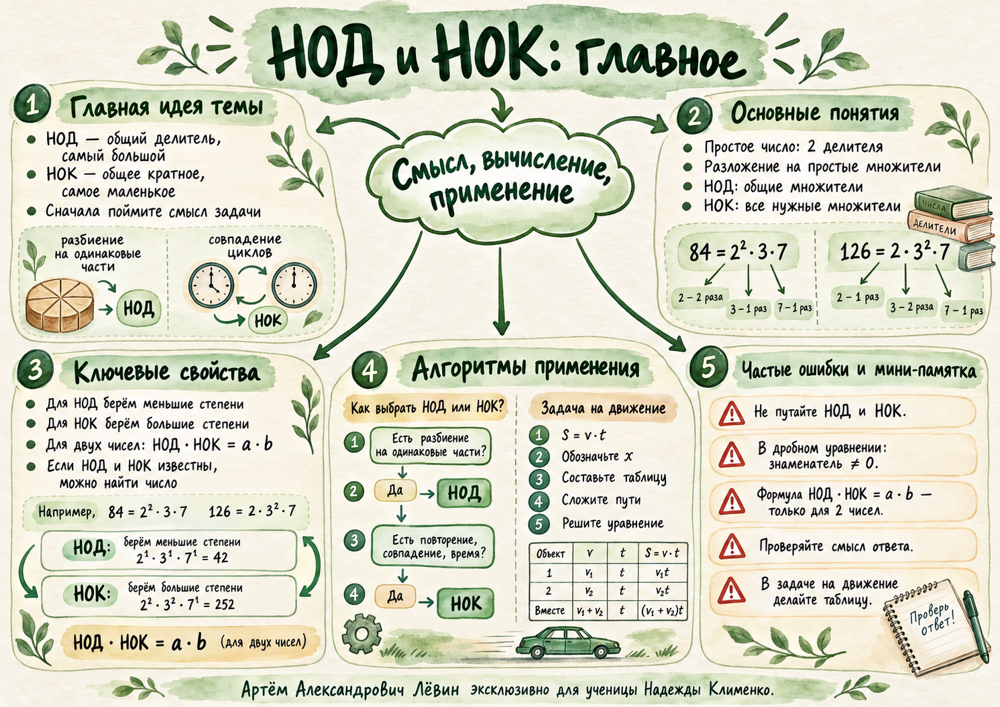

{kind=link}
Дробное уравнение
Ограничение: для 2 / (x − 3) = 10 обязательно x ≠ 3.
x − 3 = 2/10 = 1/5 → x = 16/5
После этого значение допустимо: знаменатель не обращается в ноль.
Занятие · 26 сентября 2026
Занятие соединяет три уровня рассуждения: восстановление неизвестного компонента, работу с простыми множителями и перевод текстовой задачи в уравнение движения.
Главная связка: для двух натуральных чисел НОД(a,b) · НОК(a,b) = ab; в движении сначала строим модель S = vt, затем уравнение.

01 · Обратные действия
Перед преобразованием назовите компонент действия. Для дробного уравнения отдельно зафиксируйте запрещённое значение знаменателя, после решения выполните подстановку.
Неизвестное делимое равно произведению делителя и частного. Пример из пособия: x / 3 = 5, поэтому x = 15.
Сначала найдите x + c, затем x. Пример: (x + 1) / 3 = 5, поэтому x = 14.
Неизвестный делитель равен делимому, делённому на частное. Пример: 3 / (x + 1) = 5, поэтому x = −2/5.
Вычитаемое равно разности уменьшаемого и разности. Пример: 10 − x = 2, поэтому x = 8.
Сначала уберите прибавление или вычитание, затем делите на коэффициент при x. Пример: 2x − 3 = 10, поэтому x = 13/2.
После этого значение допустимо: знаменатель не обращается в ноль.
02 · Факторизация
Разложение на простые множители становится общим языком для НОД и НОК. Показатель степени показывает, сколько раз соответствующий простой множитель входит в число.
| Множитель | в 84 | в 126 | для НОД | для НОК |
|---|---|---|---|---|
| 2 | 2 | 1 | min = 1 | max = 2 |
| 3 | 1 | 2 | min = 1 | max = 2 |
| 7 | 1 | 1 | min = 1 | max = 1 |
03 · Выбор алгоритма
Для НОД берутся только общие простые множители в наименьших степенях. Для НОК нужны все простые множители в наибольших степенях, встречающихся в разложениях.
Наибольшее натуральное число, на которое оба исходных числа делятся без остатка.
В задаче про ленты длиной 84 см и 126 см это длина одинакового куска: 42 см.
Наименьшее натуральное число, которое делится на оба исходных числа.
Если сигналы повторяются каждые 12 и 18 минут, следующее одновременное срабатывание произойдёт через 36 минут.
04 · Связь двух чисел
Для двух натуральных чисел НОД и НОК связаны произведением исходных чисел. Формула позволяет находить один объект через другой и выполнять обратный ход.
Прямой ход
Для a = 84, b = 180 и НОД(a,b) = 12:
Обратный ход
Тогда сразу известно произведение исходных чисел:
Пусть НОД(n,360) = 120 и НОК(n,360) = 2520.
Следовательно, если n = 2ˣ3ʸ5ᶻ7ʷ, то x = 3, а y = z = w = 1.
Найдите простое число p, если НОК(p,18) = 90.
Чтобы НОК вырос от 18 до 90, должен появиться новый простой множитель 5. Поэтому p = 5.
05 · Математическая модель
Для равномерного движения используется S = vt. В задаче на встречное движение пути двух участников до встречи в сумме дают всё расстояние между пунктами.
скорость x км/ч
время 2 ч
путь 2x км
скорость x + 2 км/ч
время 2 ч
путь 2(x + 2) км
Скорость теплохода на 2 км/ч больше скорости катера, встреча произошла через 2 часа.
Скорости: 13,5 км/ч и 15,5 км/ч.
Назовите известные величины и то, что требуется найти.
Обозначьте неизвестную скорость через x и выразите вторую скорость.
Путь каждого участника найдите по формуле S = vt.
При встречном движении сумма пройденных путей равна общему расстоянию.
Подставьте найденные скорости и проверьте единицы измерения и смысл ответа.
06 · Самостоятельная работа
Три задания из пособия проверяют ограничение знаменателя, связь НОД и НОК и построение модели встречного движения.
Сначала укажите значение x, при котором выражение не имеет смысла. После решения выполните проверку подстановкой.
Для двух натуральных чисел a = 168 и b известно: НОД(a,b) = 24, НОК(a,b) = 840. Найдите b и разложите его на простые множители.
Из двух пунктов, расстояние между которыми 82 км, одновременно навстречу друг другу выехали два велосипедиста. Скорость второго на 5 км/ч больше скорости первого. Через 2 часа они встретились. Найдите скорости обоих велосипедистов.
| № | Ответ |
|---|---|
| 1 | x ≠ 2; x = 4. Проверка: 8 / (4 − 2) = 4. |
| 2 | b = 120; 120 = 2³ · 3 · 5. |
| 3 | 18 км/ч и 23 км/ч. |
Какой показатель степени берётся для НОД?
Какой показатель степени берётся для НОК?
Для скольких натуральных чисел в пособии используется формула НОД(a,b) · НОК(a,b) = ab?
Что складывается в задаче на встречное движение до встречи?
Отмечено: 0 из 9.